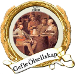

Drycker och provningar.
Gefle Ölsellskap
1 Information

Det här är en förteckning över (alla) Gefle Ölsellskaps öl-provningar. Dokumentet genereras utifrån en databas som ständigt utökas av medlemmarna vart efter vi provar fler öl. Informationen i databasen kommer att förändras och förbättras med tiden. Om du som läser detta hittar ni några fel så skicka ett mail till info@gefleolsellskap.com
Den här websidan finns som
En delmängd går även att ladda ner som CSV-fil som går att öppna i ett kalkylprogram som Excel eller det total överlägsna LibreOffice
1.1 Huvudöltyper i databasen.
- Följande klassiska öltyper är databasens huvud typer.
- Alla öl bör, och kan max, ha en huvudtyp (enligt tabellen nedan) men kan sedan var specificerad ytterligare med fritext. Till exempel kan 23 India Pale Ale vara session ip, apa osv.
- Listan är en sammanslagning av 5 standarder hämtade från https://en.wikipedia.org/wiki/List_of_beer_styles
| Nr | Term | Kallas/Exempel |
|---|---|---|
| 0 | Unknown/Other | Okänd eller annan typ (se text) |
| 1 | Altbier | German-Style Altbier |
| 2 | Amber ale | American-Style Amber,Red Ale |
| 3 | Barley wine | |
| 4 | Berliner Weisse | Berliner-Style Weisse |
| 5 | Bière de Garde | French-Style Bière de Garde |
| 6 | Bitter | Ordinary-/Special-/Extra-/Strong Bitter |
| 7 | Blonde Ale | Golden-/Belgian-Style-/Blonde Ale |
| 8 | Bock | Bok, Helles Bock, Dunkles Bock |
| 9 | Brown ale | English-Style-, British Brown Ale |
| 10 | California Common/Steam Beer | American-Style Cream Ale |
| 11 | Cream Ale | |
| 12 | Doppelbock | "Double" bock, German-Style |
| 13 | Dortmunder Export | Export, European-Style, German Helles, Exportbier |
| 14 | Dunkel | Dunkles, Münchner Dunkel |
| 15 | Dunkelweizen | South German-Style Dunkel |
| 16 | Eisbock | Weizen, German-Style Eisbock |
| 17 | Flanders red ale | Red beers, Oud Bruin, Oud Red Ale |
| 18 | Golden/Summer ale | Blonde Ale |
| 19 | Gose | Contemporary Gose |
| 20 | Gueuze | Belgian-Style Gueuze Lambic |
| 21 | Hefeweizen | South German-Style Hefeweizen |
| 22 | Helles | Hell,Münchner (Munich)-Style Helles, Munich Helles |
| 23 | India pale ale | IPA, DIPA, APA, Imperial, Session IPA |
| 24 | Kölsch | Kolsch, German-Style Kölsch |
| 25 | Lambic | Fruit Lambic |
| 26 | Light ale | |
| 27 | Maibock/Helles bock | German-Style Heller Bock/Maibock |
| 28 | Malt liquor | American-Style Malt Liquor |
| 29 | Mild | Mild ale, Pale Mild Ale, Dark Mild |
| 30 | Oktoberfestbier/Märzenbier | Marzen, Maerzen, Festbier, Oktoberfest/Wiesn |
| 31 | Old ale | |
| 32 | Oud bruin | Brown Beers, Flanders Oud Bruin, Oud Red Ale |
| 33 | Pale ale | Classic Pale Ale |
| 34 | Pilsener/Pilsner/Pils | Bohemian pilsner, American-,International- |
| 35 | Porter | Baltic porter, Brown-, Smoke-, |
| 36 | Red ale | Irish-/Amber-/Imperial red ale |
| 37 | Roggenbier | German-Style Rye Ale |
| 38 | Saison | Classic French-/Belgian-/Special- |
| 39 | Schwarzbier | |
| 40 | Scotch ale | Scottish Beers, Wee Heavy |
| 41 | Stout | |
| 42 | Vienna lager | |
| 43 | Weissbier | |
| 44 | Weizenbock | |
| 45 | Witbier | |
| 46 | Fruit beer | |
| 47 | Herb and spiced beer | |
| 48 | Honey beer | |
| 49 | Rye Beer | |
| 50 | Smoked beer | |
| 51 | Vegetable beer | |
| 52 | Wild beer | |
| 53 | Wood-aged beer |
2 Drycker och provningar
2.1 Belgien
2.1.1 Brasserie Du Bocq
2.1.1.1 St.Benoit Blond
- Öl namn: St.Benoit Blond
- Land/Länder: Belgien
- Bryggeri(er): Brasserie Du Bocq
2.1.1.1.1 Provning(ar)
- Datum: 2010-09-01
- Provare: Gefle Ölsellskap
- Plats: Terrassen
2.1.2 Brouwerij Affligem De Smedt
2.1.2.1 Affligem Dubbel
- Öl namn: Affligem Dubbel
- Land/Länder: Belgien
- Bryggeri(er):
- Brouwerij Affligem De Smedt
- Heineken
2.1.2.1.1 Provning(ar)
- Datum: 2007-03-07
- Provare: Gefle Ölsellskap
- Plats: Terrassen
2.1.2.2 Affligem Blond
- Öl namn: Affligem Blond
- Land/Länder: Belgien
- Bryggeri(er):
- Brouwerij Affligem De Smedt
- Affligem Brouwerij
- Heineken
2.1.2.2.1 Provning(ar)
- Datum: 2007-03-07
- Provare: Gefle Ölsellskap
- Plats: Terrassen
2.1.3 Brouwerij Lindemans
2.1.3.1 Lindemans Kriek Cuvée René
- Öl namn: Lindemans Kriek Cuvée René
- Land/Länder: Belgien
- Bryggeri(er): Brouwerij Lindemans
2.1.3.1.1 Provning(ar)
- Datum: 2008-09-05
- Provare: Gefle Ölsellskap
- Plats: Terrassen
2.1.4 Brouwerij de Koningshoeven
2.1.4.1 La Trappe Tripel
- Öl namn: La Trappe Tripel
- Land/Länder: Belgien
- Bryggeri(er): Brouwerij de Koningshoeven
2.1.4.1.1 Provning(ar)
- Datum: 2007-12-01
- Provare: Gefle Ölsellskap
- Plats: Terrassen
2.1.5 Brouwerij Rodenbach
2.1.5.1 Rodenbach Grand Cru
- Öl namn: Rodenbach Grand Cru
- Land/Länder: Belgien
- Bryggeri(er):
- Brouwerij Rodenbach
- Palm Breweries
2.1.5.1.1 Provning(ar)
- Datum: 2009-05-06
- Provare: Gefle Ölsellskap
- Plats: Terrassen
2.1.6 Verhaeghe
2.1.6.1 Verhaeghe Duchesse De Bourgogne
- Öl namn: Verhaeghe Duchesse De Bourgogne
- Land/Länder: Belgien
- Bryggeri(er): Verhaeghe
2.1.6.1.1 Provning(ar)
- Datum: 2008-04-02
- Provare: Gefle Ölsellskap
- Plats: Terrassen
2.1.7 Het Anker
2.1.7.1 Gouden Carolus Classic
- Öl namn: Gouden Carolus Classic
- Land/Länder: Belgien
- Bryggeri(er): Het Anker
2.1.7.1.1 Provning(ar)
- Datum: 2008-07-02
- Provare: Gefle Ölsellskap
- Plats: Terrassen
2.1.8 St. Bernardus
2.1.8.1 Grottenbier
- Öl namn: Grottenbier
- Land/Länder: Belgien
- Bryggeri(er): St. Bernardus
2.1.8.1.1 Provning(ar)
- Datum: 2007-07-04
- Provare: Gefle Ölsellskap
- Plats: Terrassen
2.1.8.2 Wit
- Öl namn: Wit
- Land/Länder: Belgien
- Bryggeri(er): St. Bernardus
2.1.8.2.1 Provning(ar)
- Datum: 2008-07-02
- Provare: Gefle Ölsellskap
- Plats: Terrassen
2.1.9 Brasserie Lefebvre
2.1.9.1 Floreffe Double
- Öl namn: Floreffe Double
- Land/Länder: Belgien
- Bryggeri(er): Brasserie Lefebvre
2.1.9.1.1 Provning(ar)
- Datum: 2009-02-04
- Provare: Gefle Ölsellskap
- Plats: Terrassen
2.1.9.2 Floreffe Blond
- Öl namn: Floreffe Blond
- Land/Länder: Belgien
- Bryggeri(er): Brasserie Lefebvre
2.1.9.2.1 Provning(ar)
- Datum: 2009-02-04
- Provare: Gefle Ölsellskap
- Plats: Terrassen
2.1.10 Palm Breweries
2.1.10.1 Steenbrugge Dubbel Bruin
- Öl namn: Steenbrugge Dubbel Bruin
- Land/Länder: Belgien
- Bryggeri(er): Palm Breweries
2.1.10.1.1 Provning(ar)
- Datum: 2009-04-01
- Provare: Gefle Ölsellskap
- Plats: Terrassen
2.1.10.2 Steenbrugge Blond
- Öl namn: Steenbrugge Blond
- Land/Länder: Belgien
- Bryggeri(er): Palm Breweries
2.1.10.2.1 Provning(ar)
- Datum: 2009-04-01
- Provare: Gefle Ölsellskap
- Plats: Terrassen
2.1.10.3 King Cobra
- Öl namn: King Cobra
- Land/Länder: Belgien
- Bryggeri(er): Palm Breweries
2.1.10.3.1 Provning(ar)
- Datum: 2007-02-07
- Provare: Gefle Ölsellskap
- Plats: Terrassen
2.1.11 John Martin Scottish & Newcastle
2.1.11.1 Gordon X-Mas Ale
- Öl namn: Gordon X-Mas Ale
- Land/Länder: Belgien
- Bryggeri(er): John Martin Scottish & Newcastle
2.1.11.1.1 Provning(ar)
- Datum: 2005-12-07
- Provare: Gefle Ölsellskap
- Plats: Terrassen
2.1.12 Brouwerij De Dolle Brouwers
2.1.12.1 De Dolle Dulle Teve Mad Bitch
- Öl namn: De Dolle Dulle Teve Mad Bitch
- Land/Länder: Belgien
- Bryggeri(er): Brouwerij De Dolle Brouwers
2.1.12.1.1 Provning(ar)
- Datum: 2008-01-02
- Provare: Gefle Ölsellskap
- Plats: Terrassen
2.1.12.2 Oerbier
- Öl namn: Oerbier
- Land/Länder: Belgien
- Bryggeri(er): Brouwerij De Dolle Brouwers
2.1.12.2.1 Provning(ar)
- Datum: 2007-07-04
- Provare: Gefle Ölsellskap
- Plats: Terrassen
2.2 Tyskland
2.2.1 Spaten-Franziskaner-Bräu
2.2.1.1 Spaten Oktoberfestbier
- Öl namn: Spaten Oktoberfestbier
- Land/Länder: Tyskland
- Bryggeri(er): Spaten-Franziskaner-Bräu
2.2.1.1.1 Provning(ar)
- Datum: 2006-10-04
- Provare: Gefle Ölsellskap
- Plats: Terrassen
2.2.1.2 Spaten Optimator
- Öl namn: Spaten Optimator
- Land/Länder: Tyskland
- Bryggeri(er): Spaten-Franziskaner-Bräu
2.2.1.2.1 Provning(ar)
- Datum: 2006-10-04
- Provare: Gefle Ölsellskap
- Plats: Terrassen
2.2.2 Paulaner Brauerei Schörghuber
2.2.2.1 Salvator
- Öl namn: Salvator
- Land/Länder: Tyskland
- Bryggeri(er): Paulaner Brauerei Schörghuber
2.2.2.1.1 Provning(ar)
- Datum: 2007-04-04
- Provare: Gefle Ölsellskap
- Plats: Terrassen
2.2.3 Friesisches Brauhaus
2.2.3.1 Jever Pilsener
- Öl namn: Jever Pilsener
- Land/Länder: Tyskland
- Bryggeri(er): Friesisches Brauhaus
2.2.3.1.1 Provning(ar)
- Datum: 2007-12-01
- Provare: Gefle Ölsellskap
- Plats: Terrassen
2.2.4 Paulaner Brauerei (Schörghuber)
2.2.4.1 Paulaner Oktoberfest Bier
- Öl namn: Paulaner Oktoberfest Bier
- Land/Länder: Tyskland
- Bryggeri(er): Paulaner Brauerei (Schörghuber)
2.2.4.1.1 Provning(ar)
- Datum: 2006-10-04
- Provare: Gefle Ölsellskap
- Plats: Terrassen
2.2.4.2 Hacker-Pschorr Braumeister Pils
- Öl namn: Hacker-Pschorr Braumeister Pils
- Land/Länder: Tyskland
- Bryggeri(er): Paulaner Brauerei (Schörghuber)
2.2.4.2.1 Provning(ar)
- Datum: 2006-08-02
- Provare: Gefle Ölsellskap
- Plats: Terrassen
2.2.5 Einbecker Brauhause
2.2.5.1 Einbecker Brauherren Pils
- Öl namn: Einbecker Brauherren Pils
- Land/Länder: Tyskland
- Bryggeri(er): Einbecker Brauhause
2.2.5.1.1 Provning(ar)
- Datum: 2009-03-04
- Provare: Gefle Ölsellskap
- Plats: Terrassen
2.2.6 Brauerei Heller-Trum _ Schlenkerla
2.2.6.1 Aecht Schlenkerla Rauchbier Märzen
- Öl namn: Aecht Schlenkerla Rauchbier Märzen
- Land/Länder: Tyskland
- Bryggeri(er): Brauerei Heller-Trum _ Schlenkerla
2.2.6.1.1 Provning(ar)
- Datum: 2006-07-05
- Provare: Gefle Ölsellskap
- Plats: Terrassen
2.2.7 Hofbräu München
2.2.7.1 Oktoberfestbier
- Öl namn: Oktoberfestbier
- Land/Länder: Tyskland
- Bryggeri(er): Hofbräu München
2.2.7.1.1 Provning(ar)
- Datum: 2008-10-01
- Provare: Gefle Ölsellskap
- Plats: Terrassen
2.3 USA
2.3.1 Anchor Brewing Company
2.3.1.1 Merry Christmas & Happy New Year (Our Special Ale)
- Öl namn: Merry Christmas & Happy New Year (Our Special Ale)
- Land/Länder: USA
- Bryggeri(er): Anchor Brewing Company
2.3.1.1.1 Provning(ar)
- Datum: 2005-12-07
- Provare: Gefle Ölsellskap
- Plats: Terrassen
2.3.1.2 Liberty Ale
- Öl namn: Liberty Ale
- Land/Länder: USA
- Bryggeri(er): Anchor Brewing Company
2.3.1.2.1 Provning(ar)
- Datum: 2009-06-03
- Provare: Gefle Ölsellskap
- Plats: Terrassen
2.3.1.3 Anchor Steam
- Öl namn: Anchor Steam
- Land/Länder: USA
- Bryggeri(er): Anchor Brewing Company
2.3.1.3.1 Provning(ar)
- Datum: 2009-06-03
- Provare: Gefle Ölsellskap
- Plats: Terrassen
2.3.1.4 Merry Christmas & Happy New Year (Our Special Ale) (2005)
- Öl namn: Merry Christmas & Happy New Year (Our Special Ale) (2005)
- Land/Länder: USA
- Bryggeri(er): Anchor Brewing Company
2.3.1.4.1 Provning(ar)
- Datum: 2005-12-07
- Provare: Gefle Ölsellskap
- Plats: Terrassen
2.3.2 Tommy Knocker Brewery
2.3.2.1 Pick Axe IPA
- Öl namn: Pick Axe IPA
- Land/Länder: USA
- Bryggeri(er): Tommy Knocker Brewery
2.3.2.1.1 Provning(ar)
- Datum: 2013-09-04
- Provare: Gefle Ölsellskap
- Plats: Terrassen
2.3.3 Stone Brewing
2.3.3.1 Go To Ipa
- Öl namn: Go To Ipa
- Beskrivning: En amerikans öl, bryggd i tyskland
- Land/Länder:
- USA
- Tyskland
- Bryggeri(er): Stone Brewing
- Länk(ar):
- Öltyp: 23 - India pale ale
- Öltyp (fritext): Session ipa
- ABV: 4.7
2.3.3.1.1 Provning(ar)
- Datum: 2020-02-05
- Provare: Gefle Ölsellskap
- Plats: Terrassen
- Antal provare: 51
- Personlig bedömning (snittbetyg): 6.41176470588
- Kommentar(er):
- Rejält hummlad med rejäl beska!
- Noll söttma men väldigt fräsh
- Fräsh sommaröl
- Hum hum från humlegården :)
- Förkyld, så den luktade inget
- Nästa!
- Mycket god, lång och sen eftersmak
- Smakar varmkorv
- Blir lite väl mycket beska efter en stund
- GottGottiGottGott om man säger
- Bra eftersmak, god att avnjuta på festen
- Kommentar(er):
2.3.3.2 Stone Ruination Double IPA 2.0
- Öl namn: Stone Ruination Double IPA 2.0
- Land/Länder: USA
- Bryggeri(er): Stone Brewing
- Länk(ar): https://www.beeradvocate.com/beer/profile/147/168971/
- Öltyp: 23 - India pale ale
- Öltyp (fritext):
- Dubbelipa
- Amerikansk imperial ipa
- Amerikansk dubbelipa
- ABV: 8.5
- IBU: 100
2.3.3.2.1 Provning(ar)
- Datum: 2020-02-05
- Provare: Gefle Ölsellskap
- Plats: Terrassen
- Antal provare: 51
- Personlig bedömning (snittbetyg): 6.78431372549
- Kommentar(er):
- Bra smak, går i alla väder. Mycket god.
- Mycket god!
- En öl räcker! God
- 100 IBU, men det känns inte för att den balanseras upp av sötman och fylligheten
- Känner ingen doft
- Suverän dubbelipa
- Bara stark!
- Två likvädriga god öl
- Balanserad smak, lite mer bäska än sötma. Fräsch för en dubbelipa
- Kommentar(er):
2.3.4 Napa Smith
2.3.4.1 Amber Ale
- Öl namn: Amber Ale
- Land/Länder: USA
- Bryggeri(er): Napa Smith
2.3.4.1.1 Provning(ar)
- Datum: 2013-08-07
- Provare: Gefle Ölsellskap
- Plats: Terrassen
2.3.4.2 Hopa Geddon
- Öl namn: Hopa Geddon
- Land/Länder: USA
- Bryggeri(er): Napa Smith
2.3.4.2.1 Provning(ar)
- Datum: 2013-08-07
- Provare: Gefle Ölsellskap
- Plats: Terrassen
2.3.5 Brooklyn Brewery
2.3.5.1 Brooklyn Brown Ale
- Öl namn: Brooklyn Brown Ale
- Land/Länder: USA
- Bryggeri(er): Brooklyn Brewery
2.3.5.1.1 Provning(ar)
- Datum: 2008-08-06
- Provare: Gefle Ölsellskap
- Plats: Terrassen
2.3.6 Sierra Nevada Brewing
2.3.6.1 Pale Ale
- Öl namn: Pale Ale
- Land/Länder: USA
- Bryggeri(er): Sierra Nevada Brewing
2.3.6.1.1 Provning(ar)
- Datum: 2009-07-01
- Provare: Gefle Ölsellskap
- Plats: Terrassen
2.3.7 Michigan Brewing Co
2.3.7.1 Summer Ale
- Öl namn: Summer Ale
- Land/Länder: USA
- Bryggeri(er): Michigan Brewing Co
2.3.7.1.1 Provning(ar)
- Datum: 2008-06-04
- Provare: Gefle Ölsellskap
- Plats: Terrassen
2.3.7.2 High Seas
- Öl namn: High Seas
- Land/Länder: USA
- Bryggeri(er): Michigan Brewing Co
2.3.7.2.1 Provning(ar)
- Datum: 2008-06-04
- Provare: Gefle Ölsellskap
- Plats: Terrassen
2.3.8 Lagunita Brewing Co
2.3.8.1 Lagunita IPA
- Öl namn: Lagunita IPA
- Land/Länder: USA
- Bryggeri(er): Lagunita Brewing Co
2.3.8.1.1 Provning(ar)
- Datum: 2013-09-04
- Provare: Gefle Ölsellskap
- Plats: Terrassen
2.3.9 Six Point Brewery
2.3.9.1 The Crisp
- Öl namn: The Crisp
- Land/Länder: USA
- Bryggeri(er): Six Point Brewery
2.3.9.1.1 Provning(ar)
- Datum: 2013-05-01
- Provare: Gefle Ölsellskap
- Plats: Terrassen
2.3.10 Rogue Ales
2.3.10.1 Rogue Chipotle Ale
- Öl namn: Rogue Chipotle Ale
- Land/Länder: USA
- Bryggeri(er): Rogue Ales
2.3.10.1.1 Provning(ar)
- Datum: 2007-08-01
- Provare: Gefle Ölsellskap
- Plats: Terrassen
2.3.11 Samuel Adams
2.3.11.1 Samuel Adams Winter Lager
- Öl namn: Samuel Adams Winter Lager
- Land/Länder: USA
- Bryggeri(er): Samuel Adams
2.3.11.1.1 Provning(ar)
- Datum: 2009-12-02
- Provare: Gefle Ölsellskap
- Plats: Terrassen
2.3.12 Victory Brewing
2.3.12.1 Prima Pils
- Öl namn: Prima Pils
- Land/Länder: USA
- Bryggeri(er): Victory Brewing
2.3.12.1.1 Provning(ar)
- Datum: 2010-05-05
- Provare: Gefle Ölsellskap
- Plats: Terrassen
2.3.13 Flying dog
2.3.13.1 Tire Bite Golden Ale
- Öl namn: Tire Bite Golden Ale
- Land/Länder: USA
- Bryggeri(er): Flying dog
2.3.13.1.1 Provning(ar)
- Datum: 2009-07-01
- Provare: Gefle Ölsellskap
- Plats: Terrassen
2.3.13.2 Old Scratch Amber Lager
- Öl namn: Old Scratch Amber Lager
- Land/Länder: USA
- Bryggeri(er): Flying dog
2.3.13.2.1 Provning(ar)
- Datum: 2009-03-04
- Provare: Gefle Ölsellskap
- Plats: Terrassen
2.3.14 Great Divide Brewing Company
2.3.14.1 Great Divide Ridgeline Amber Ale (Arapahoe Amber)
- Öl namn: Great Divide Ridgeline Amber Ale (Arapahoe Amber)
- Land/Länder: USA
- Bryggeri(er): Great Divide Brewing Company
2.3.14.1.1 Provning(ar)
- Datum: 2007-08-01
- Provare: Gefle Ölsellskap
- Plats: Terrassen
2.3.14.2 Hercules Double IPA
- Öl namn: Hercules Double IPA
- Land/Länder: USA
- Bryggeri(er): Great Divide Brewing Company
2.3.14.2.1 Provning(ar)
- Datum: 2008-09-05
- Provare: Gefle Ölsellskap
- Plats: Terrassen
2.3.15 Sixpoint Brewery
2.3.15.1 Sixpoint Righteous Ale
- Öl namn: Sixpoint Righteous Ale
- Land/Länder: USA
- Bryggeri(er): Sixpoint Brewery
2.3.15.1.1 Provning(ar)
- Datum: 2012-11-07
- Provare: Gefle Ölsellskap
- Plats: Terrassen
2.3.15.2 Sixpoint Bengali Tiger IPA
- Öl namn: Sixpoint Bengali Tiger IPA
- Land/Länder: USA
- Bryggeri(er): Sixpoint Brewery
2.3.15.2.1 Provning(ar)
- Datum: 2012-11-07
- Provare: Gefle Ölsellskap
- Plats: Terrassen
2.3.16 Ska Brewing co
2.3.16.1 Modus Hoperandi
- Öl namn: Modus Hoperandi
- Land/Länder: USA
- Bryggeri(er): Ska Brewing co
2.3.16.1.1 Provning(ar)
- Datum: 2013-02-06
- Provare: Gefle Ölsellskap
- Plats: Terrassen
2.3.16.2 ESB Special Ale
- Öl namn: ESB Special Ale
- Land/Länder: USA
- Bryggeri(er): Ska Brewing co
2.3.16.2.1 Provning(ar)
- Datum: 2013-02-06
- Provare: Gefle Ölsellskap
- Plats: Terrassen
2.3.17 Samuel Adams Brewery
2.3.17.1 Oktoberfest
- Öl namn: Oktoberfest
- Land/Länder: USA
- Bryggeri(er): Samuel Adams Brewery
2.3.17.1.1 Provning(ar)
- Datum: 2007-10-03
- Provare: Gefle Ölsellskap
- Plats: Terrassen
2.4 Kanada
2.4.1 Flying Monkeys Craft Brewery
2.4.1.1 Hoptical Illusion
- Öl namn: Hoptical Illusion
- Land/Länder: Kanada
- Bryggeri(er): Flying Monkeys Craft Brewery
2.4.1.1.1 Provning(ar)
- Datum: 2013-01-02
- Provare: Gefle Ölsellskap
- Plats: Terrassen
2.5 Danmark
2.5.1 Bryghuset Braunstein
2.5.1.1 Braunstein Winter Bock
- Öl namn: Braunstein Winter Bock
- Land/Länder: Danmark
- Bryggeri(er): Bryghuset Braunstein
2.5.1.1.1 Provning(ar)
- Datum: 2008-03-05
- Provare: Gefle Ölsellskap
- Plats: Terrassen
2.5.2 Mikkeller
2.5.2.1 Kärlek vår_sommar 2013
- Öl namn: Kärlek vår_sommar 2013
- Land/Länder: Danmark
- Bryggeri(er): Mikkeller
2.5.2.1.1 Provning(ar)
- Datum: 2013-05-01
- Provare: Gefle Ölsellskap
- Plats: Terrassen
2.5.2.2 Beer Geek Breakfast
- Öl namn: Beer Geek Breakfast
- Land/Länder: Danmark
- Bryggeri(er): Mikkeller
2.5.2.2.1 Provning(ar)
- Datum: 2013-04-03
- Provare: Gefle Ölsellskap
- Plats: Terrassen
2.5.3 Bear Here
2.5.3.1 Dead Cat
- Öl namn: Dead Cat
- Land/Länder: Danmark
- Bryggeri(er): Bear Here
2.5.3.1.1 Provning(ar)
- Datum: 2013-04-03
- Provare: Gefle Ölsellskap
- Plats: Terrassen
2.5.4 Husbryggeriet Jacobsen (Carlsberg)
2.5.4.1 Jacobsen Original Dark Lager
- Öl namn: Jacobsen Original Dark Lager
- Land/Länder: Danmark
- Bryggeri(er): Husbryggeriet Jacobsen (Carlsberg)
2.5.4.1.1 Provning(ar)
- Datum: 2007-01-03
- Provare: Gefle Ölsellskap
- Plats: Terrassen
2.6 Slovakien
2.6.1 Zlatý Bažant
2.6.1.1 Zlatý Bažant
- Öl namn: Zlatý Bažant
- Land/Länder: Slovakien
- Bryggeri(er): Zlatý Bažant
2.6.1.1.1 Provning(ar)
- Datum: 2009-08-05
- Provare: Gefle Ölsellskap
- Plats: Terrassen
2.7 Sverige
2.7.1 Skebo Bruksbryggeri
2.7.1.1 USB UteSittarBärs
- Öl namn: USB UteSittarBärs
- Land/Länder: Sverige
- Bryggeri(er): Skebo Bruksbryggeri
2.7.1.1.1 Provning(ar)
- Datum: 2010-08-04
- Provare: Gefle Ölsellskap
- Plats: Terrassen
2.7.1.2 Trippel Gold Bitter
- Öl namn: Trippel Gold Bitter
- Land/Länder: Sverige
- Bryggeri(er): Skebo Bruksbryggeri
2.7.1.2.1 Provning(ar)
- Datum: 2008-02-06
- Provare: Gefle Ölsellskap
- Plats: Terrassen
2.7.1.3 Bruksöl
- Öl namn: Bruksöl
- Land/Länder: Sverige
- Bryggeri(er): Skebo Bruksbryggeri
2.7.1.3.1 Provning(ar)
- Datum: 2007-05-02
- Provare: Gefle Ölsellskap
- Plats: Terrassen
2.7.2 Sigtuna Brygghus
2.7.2.1 HUMLE-HILDAS ALTBIER
- Öl namn: HUMLE-HILDAS ALTBIER
- Land/Länder: Sverige
- Bryggeri(er): Sigtuna Brygghus
2.7.2.1.1 Provning(ar)
- Datum: 2009-05-06
- Provare: Gefle Ölsellskap
- Plats: Terrassen
2.7.3 Åbro bryggeri
2.7.3.1 Åbro Arton56 Amber
- Öl namn: Åbro Arton56 Amber
- Land/Länder: Sverige
- Bryggeri(er): Åbro bryggeri
2.7.3.1.1 Provning(ar)
- Datum: 2006-11-01
- Provare: Gefle Ölsellskap
- Plats: Terrassen
2.7.4 Nynäshamns Ångbryggeri AB
2.7.4.1 Mysingen Midvinterbrygd
- Öl namn: Mysingen Midvinterbrygd
- Land/Länder: Sverige
- Bryggeri(er): Nynäshamns Ångbryggeri AB
2.7.4.1.1 Provning(ar)
- Datum: 2010-04-07
- Provare: Gefle Ölsellskap
- Plats: Terrassen
2.7.4.2 Landsort lager
- Öl namn: Landsort lager
- Land/Länder: Sverige
- Bryggeri(er): Nynäshamns Ångbryggeri AB
2.7.4.2.1 Provning(ar)
- Datum: 2010-11-03
- Provare: Gefle Ölsellskap
- Plats: Terrassen
2.7.4.3 Bedarö Bitter
- Öl namn: Bedarö Bitter
- Land/Länder: Sverige
- Bryggeri(er): Nynäshamns Ångbryggeri AB
2.7.4.3.1 Provning(ar)
- Datum: 2007-12-01
- Provare: Gefle Ölsellskap
- Plats: Terrassen
2.7.5 Hällsinge bryggeri
2.7.5.1 Hälsinge Stout
- Öl namn: Hälsinge Stout
- Land/Länder: Sverige
- Bryggeri(er): Hällsinge bryggeri
2.7.5.1.1 Provning(ar)
- Datum: 2007-05-02
- Provare: Gefle Ölsellskap
- Plats: Terrassen
2.7.6 Zeunerts Bryggeri Kopparberg
2.7.6.1 Zeunerts Höga Kusten
- Öl namn: Zeunerts Höga Kusten
- Land/Länder: Sverige
- Bryggeri(er): Zeunerts Bryggeri Kopparberg
2.7.6.1.1 Provning(ar)
- Datum: 2010-08-04
- Provare: Gefle Ölsellskap
- Plats: Terrassen
2.7.7 Carlsberg Sverige
2.7.7.1 Falcon Gammelbryggd
- Öl namn: Falcon Gammelbryggd
- Land/Länder: Sverige
- Bryggeri(er): Carlsberg Sverige
2.7.7.1.1 Provning(ar)
- Datum: 2008-12-03
- Provare: Gefle Ölsellskap
- Plats: Terrassen
2.7.7.2 Eriksberg Julöl
- Öl namn: Eriksberg Julöl
- Land/Länder: Sverige
- Bryggeri(er): Carlsberg Sverige
2.7.7.2.1 Provning(ar)
- Datum: 2010-12-01
- Provare: Gefle Ölsellskap
- Plats: Terrassen
2.7.8 Slottskällans Bryggeri
2.7.8.1 Slottskällans Bryggeri
- Öl namn: Slottskällans Bryggeri
- Land/Länder: Sverige
- Bryggeri(er): Slottskällans Bryggeri
2.7.8.1.1 Provning(ar)
- Datum: 2006-03-01
- Provare: Gefle Ölsellskap
- Plats: Terrassen
2.7.9 Odd Island Brewing
2.7.9.1 Hazie Dizzie
- Öl namn: Hazie Dizzie
- Land/Länder: Sverige
- Bryggeri(er): Odd Island Brewing
- Öltyp: 23 - India pale ale
- Öltyp (fritext): New england IPA
- ABV: 6.2
2.7.9.1.1 Provning(ar)
- Datum: 2020-01-02
- Provare: Gefle Ölsellskap
- Plats: Terrassen
- Antal provare: 41
- Personlig bedömning (snittbetyg): 6.56097560976
- Kommentar(er):
- God öl/Smakvik
- God men inte mer
- Fin summertime öl
- Säkert god en varm sommardag
- God. Torr.
- Grillöl ++
- Bra citrussmak!
- Tunn men fräsch
- Hård som rock!
- Delikat Neipa
- Kommentar(er):
2.7.9.2 Citrauvin
- Öl namn: Citrauvin
- Land/Länder: Sverige
- Bryggeri(er): Odd Island Brewing
- Öltyp: 23 - India pale ale
- Öltyp (fritext): APA
- ABV: 5.5
2.7.9.2.1 Provning(ar)
- Datum: 2020-01-02
- Provare: Gefle Ölsellskap
- Plats: Terrassen
- Antal provare: 41
- Personlig bedömning (snittbetyg): 7.29268292683
- Kommentar(er):
- En god apa!
- En bra start på året.
- Lite tunn men rätt trevlig.
- Grapefruit, fruktig med lite sträv eftersmak
- Bra syra, mycket bra!
- God, tydlig efterbeska!
- Grym
- God och samfull smak
- God!
- Varför kör jag bil idag?
- Kommentar(er):
2.7.10 Jämtlands bryggeri
2.7.10.1 Hell
- Öl namn: Hell
- Land/Länder: Sverige
- Bryggeri(er): Jämtlands bryggeri
2.7.10.1.1 Provning(ar)
- Datum: 2010-07-07
- Provare: Gefle Ölsellskap
- Plats: Terrassen
2.7.10.2 Jämtlands India Pale Ale
- Öl namn: Jämtlands India Pale Ale
- Land/Länder: Sverige
- Bryggeri(er): Jämtlands bryggeri
2.7.10.2.1 Provning(ar)
- Datum: 2009-01-07
- Provare: Gefle Ölsellskap
- Plats: Terrassen
2.7.10.3 Jämtlands Tiotaggare
- Öl namn: Jämtlands Tiotaggare
- Land/Länder: Sverige
- Bryggeri(er): Jämtlands bryggeri
2.7.10.3.1 Provning(ar)
- Datum: 2006-11-01
- Provare: Gefle Ölsellskap
- Plats: Terrassen
2.7.11 Hantverksbryggeriet
2.7.11.1 Narren
- Öl namn: Narren
- Land/Länder: Sverige
- Bryggeri(er): Hantverksbryggeriet
2.7.11.1.1 Provning(ar)
- Datum: 2008-12-03
- Provare: Gefle Ölsellskap
- Plats: Terrassen
2.7.12 Sandbacka bryggeri
2.7.12.1 Sandbacka bitter
- Öl namn: Sandbacka bitter
- Land/Länder: Sverige
- Bryggeri(er): Sandbacka bryggeri
2.7.12.1.1 Provning(ar)
- Datum: 2010-05-05
- Provare: Gefle Ölsellskap
- Plats: Terrassen
2.7.13 Spendrups
2.7.13.1 Marierstad Export
- Öl namn: Marierstad Export
- Land/Länder: Sverige
- Bryggeri(er): Spendrups
2.7.13.1.1 Provning(ar)
- Datum: 2007-06-06
- Provare: Gefle Ölsellskap
- Plats: Terrassen
2.7.13.2 Wisby Hansapils
- Öl namn: Wisby Hansapils
- Land/Länder: Sverige
- Bryggeri(er): Spendrups
2.7.13.2.1 Provning(ar)
- Datum: 2007-06-06
- Provare: Gefle Ölsellskap
- Plats: Terrassen
2.7.13.3 SITTING BULLDOG IPA
- Öl namn: SITTING BULLDOG IPA
- Land/Länder: Sverige
- Bryggeri(er): Spendrups
2.7.13.3.1 Provning(ar)
- Datum: 2010-04-07
- Provare: Gefle Ölsellskap
- Plats: Terrassen
2.7.13.4 Visby Vinterbock
- Öl namn: Visby Vinterbock
- Land/Länder: Sverige
- Bryggeri(er): Spendrups
2.7.13.4.1 Provning(ar)
- Datum: 2008-04-02
- Provare: Gefle Ölsellskap
- Plats: Terrassen
2.7.13.5 Wisby Sleepy Bulldog Winter Ale
- Öl namn: Wisby Sleepy Bulldog Winter Ale
- Land/Länder: Sverige
- Bryggeri(er): Spendrups
2.7.13.5.1 Provning(ar)
- Datum: 2010-12-01
- Provare: Gefle Ölsellskap
- Plats: Terrassen
2.7.14 Närke Kulturbryggeri
2.7.14.1 Närke Mörker
- Öl namn: Närke Mörker
- Land/Länder: Sverige
- Bryggeri(er): Närke Kulturbryggeri
2.7.14.1.1 Provning(ar)
- Datum: 2009-12-02
- Provare: Gefle Ölsellskap
- Plats: Terrassen
2.7.15 Nils Oscar
2.7.15.1 India Ale
- Öl namn: India Ale
- Land/Länder: Sverige
- Bryggeri(er): Nils Oscar
2.7.15.1.1 Provning(ar)
- Datum: 2008-11-05
- Provare: Gefle Ölsellskap
- Plats: Terrassen
2.7.15.2 Kallasöl
- Öl namn: Kallasöl
- Land/Länder: Sverige
- Bryggeri(er): Nils Oscar
2.7.15.2.1 Provning(ar)
- Datum: 2008-11-05
- Provare: Gefle Ölsellskap
- Plats: Terrassen
2.7.15.3 Nils Oscar Kalaspåsköl
- Öl namn: Nils Oscar Kalaspåsköl
- Land/Länder: Sverige
- Bryggeri(er): Nils Oscar
2.7.15.3.1 Provning(ar)
- Datum: 2007-04-04
- Provare: Gefle Ölsellskap
- Plats: Terrassen
2.7.15.4 Nils Oscar Farm Ale
- Öl namn: Nils Oscar Farm Ale
- Land/Länder: Sverige
- Bryggeri(er): Nils Oscar
2.7.15.4.1 Provning(ar)
- Datum: 2006-03-01
- Provare: Gefle Ölsellskap
- Plats: Terrassen
2.7.15.5 Hope Yard
- Öl namn: Hope Yard
- Land/Länder: Sverige
- Bryggeri(er): Nils Oscar
2.7.15.5.1 Provning(ar)
- Datum: 2013-07-03
- Provare: Gefle Ölsellskap
- Plats: Terrassen
2.8 Frankrike
2.8.1 Brasseries Kronenbourg
2.8.1.1 Kronenbourg Blanc
- Öl namn: Kronenbourg Blanc
- Land/Länder: Frankrike
- Bryggeri(er): Brasseries Kronenbourg
2.8.1.1.1 Provning(ar)
- Datum: 2008-02-06
- Provare: Gefle Ölsellskap
- Plats: Terrassen
2.9 Japan
2.9.1 Kirin Beer
2.9.1.1 Kirin Ichiban
- Öl namn: Kirin Ichiban
- Land/Länder: Japan
- Bryggeri(er): Kirin Beer
2.9.1.1.1 Provning(ar)
- Datum: 2009-01-07
- Provare: Gefle Ölsellskap
- Plats: Terrassen
2.10 Italien
2.10.1 Birrificio Angelo
2.10.1.1 Birra Poretti
- Öl namn: Birra Poretti
- Land/Länder: Italien
- Bryggeri(er): Birrificio Angelo
2.10.1.1.1 Provning(ar)
- Datum: 2008-09-05
- Provare: Gefle Ölsellskap
- Plats: Terrassen
2.11 Österike
2.11.1 Stiegl
2.11.1.1 Stiegl Pils
- Öl namn: Stiegl Pils
- Land/Länder: Österike
- Bryggeri(er): Stiegl
2.11.1.1.1 Provning(ar)
- Datum: 2006-05-03
- Provare: Gefle Ölsellskap
- Plats: Terrassen
2.12 Skottland
2.12.1 Innis & Gunn
2.12.1.1 Original
- Öl namn: Original
- Land/Länder: Skottland
- Bryggeri(er): Innis & Gunn
2.12.1.1.1 Provning(ar)
- Datum: 2010-07-07
- Provare: Gefle Ölsellskap
- Plats: Terrassen
2.12.1.2 Innis & Gunn Rum Finish Oak Aged Beer
- Öl namn: Innis & Gunn Rum Finish Oak Aged Beer
- Land/Länder: Skottland
- Bryggeri(er): Innis & Gunn
2.12.1.2.1 Provning(ar)
- Datum: 2008-01-02
- Provare: Gefle Ölsellskap
- Plats: Terrassen
2.12.2 The Caledonian Brewing Company
2.12.2.1 Caledonian 80
- Öl namn: Caledonian 80
- Land/Länder: Skottland
- Bryggeri(er): The Caledonian Brewing Company
2.12.2.1.1 Provning(ar)
- Datum: 2006-08-02
- Provare: Gefle Ölsellskap
- Plats: Terrassen
2.12.3 Traquair House
2.12.3.1 Traquair House Ale
- Öl namn: Traquair House Ale
- Land/Länder: Skottland
- Bryggeri(er): Traquair House
2.12.3.1.1 Provning(ar)
- Datum: 2007-01-03
- Provare: Gefle Ölsellskap
- Plats: Terrassen
2.12.4 Inveralmond Brewery
2.12.4.1 Lia Fail
- Öl namn: Lia Fail
- Land/Länder: Skottland
- Bryggeri(er): Inveralmond Brewery
2.12.4.1.1 Provning(ar)
- Datum: 2009-11-04
- Provare: Gefle Ölsellskap
- Plats: Terrassen
2.12.4.2 Ossian
- Öl namn: Ossian
- Land/Länder: Skottland
- Bryggeri(er): Inveralmond Brewery
2.12.4.2.1 Provning(ar)
- Datum: 2009-11-04
- Provare: Gefle Ölsellskap
- Plats: Terrassen
2.12.5 Belhaven
2.12.5.1 Wee Heavey
- Öl namn: Wee Heavey
- Land/Länder: Skottland
- Bryggeri(er): Belhaven
2.12.5.1.1 Provning(ar)
- Datum: 2009-09-02
- Provare: Gefle Ölsellskap
- Plats: Terrassen
2.12.5.2 Twisted Thistle IPA
- Öl namn: Twisted Thistle IPA
- Land/Länder: Skottland
- Bryggeri(er): Belhaven
2.12.5.2.1 Provning(ar)
- Datum: 2009-09-02
- Provare: Gefle Ölsellskap
- Plats: Terrassen
2.12.6 BrewDog
2.12.6.1 Punk Ipa
- Öl namn: Punk Ipa
- Land/Länder: Skottland
- Bryggeri(er): BrewDog
2.12.6.1.1 Provning(ar)
- Datum: 2010-09-01
- Provare: Gefle Ölsellskap
- Plats: Terrassen
2.12.7 Williams Brothers Heather Ales
2.12.7.1 Heather Ales Kelpie
- Öl namn: Heather Ales Kelpie
- Land/Länder: Skottland
- Bryggeri(er): Williams Brothers Heather Ales
2.12.7.1.1 Provning(ar)
- Datum: 2007-02-07
- Provare: Gefle Ölsellskap
- Plats: Terrassen
2.12.7.2 Alba
- Öl namn: Alba
- Land/Länder: Skottland
- Bryggeri(er): Williams Brothers Heather Ales
2.12.7.2.1 Provning(ar)
- Datum: 2013-07-03
- Provare: Gefle Ölsellskap
- Plats: Terrassen
2.13 Storbritanien
2.13.1 Ringwood Marstons plc
2.13.1.1 Ringwood XXXX Porter
- Öl namn: Ringwood XXXX Porter
- Land/Länder: Storbritanien
- Bryggeri(er): Ringwood Marstons plc
2.13.1.1.1 Provning(ar)
- Datum: 2007-09-05
- Provare: Gefle Ölsellskap
- Plats: Terrassen
2.13.2 Wychwood Marstons plc
2.13.2.1 Ushers Founders Ale
- Öl namn: Ushers Founders Ale
- Land/Länder: Storbritanien
- Bryggeri(er): Wychwood Marstons plc
2.13.2.1.1 Provning(ar)
- Datum: 2006-01-04
- Provare: Gefle Ölsellskap
- Plats: Terrassen
2.13.3 Daleside
2.13.3.1 Daleside Monkey Wrench
- Öl namn: Daleside Monkey Wrench
- Land/Länder: Storbritanien
- Bryggeri(er): Daleside
2.13.3.1.1 Provning(ar)
- Datum: 2007-09-05
- Provare: Gefle Ölsellskap
- Plats: Terrassen
2.13.4 Summer Vine Brewing
2.13.4.1 Gorilla
- Öl namn: Gorilla
- Land/Länder: Storbritanien
- Bryggeri(er): Summer Vine Brewing
2.13.4.1.1 Provning(ar)
- Datum: 2013-01-02
- Provare: Gefle Ölsellskap
- Plats: Terrassen
2.13.5 Fullers
2.13.5.1 Fullers Discovery
- Öl namn: Fullers Discovery
- Land/Länder: Storbritanien
- Bryggeri(er): Fullers
2.13.5.1.1 Provning(ar)
- Datum: 2006-01-04
- Provare: Gefle Ölsellskap
- Plats: Terrassen
2.13.6 Shepherd Neame Ltd
2.13.6.1 Bishop_s Arms House Ale
- Öl namn: Bishop_s Arms House Ale
- Land/Länder: Storbritanien
- Bryggeri(er): Shepherd Neame Ltd
2.13.6.1.1 Provning(ar)
- Datum: 2006-12-06
- Provare: Gefle Ölsellskap
- Plats: Terrassen
2.13.6.2 Bishop finger
- Öl namn: Bishop finger
- Land/Länder: Storbritanien
- Bryggeri(er): Shepherd Neame Ltd
2.13.6.2.1 Provning(ar)
- Datum: 2006-04-05
- Provare: Gefle Ölsellskap
- Plats: Terrassen
2.13.6.3 Shepherd Neame 1698
- Öl namn: Shepherd Neame 1698
- Land/Länder: Storbritanien
- Bryggeri(er): Shepherd Neame Ltd
2.13.6.3.1 Provning(ar)
- Datum: 2006-07-05
- Provare: Gefle Ölsellskap
- Plats: Terrassen
2.13.6.4 Whitstable Bay
- Öl namn: Whitstable Bay
- Land/Länder: Storbritanien
- Bryggeri(er): Shepherd Neame Ltd
2.13.6.4.1 Provning(ar)
- Datum: 2006-04-05
- Provare: Gefle Ölsellskap
- Plats: Terrassen
2.13.6.5 Spitfire
- Öl namn: Spitfire
- Land/Länder: Storbritanien
- Bryggeri(er): Shepherd Neame Ltd
2.13.6.5.1 Provning(ar)
- Datum: 2006-04-05
- Provare: Gefle Ölsellskap
- Plats: Terrassen
2.13.6.6 Shepherd Neame Christmas Ale
- Öl namn: Shepherd Neame Christmas Ale
- Land/Länder: Storbritanien
- Bryggeri(er): Shepherd Neame Ltd
2.13.6.6.1 Provning(ar)
- Datum: 2007-12-05
- Provare: Gefle Ölsellskap
- Plats: Terrassen
2.13.6.7 Shepherd Neame Late Red
- Öl namn: Shepherd Neame Late Red
- Land/Länder: Storbritanien
- Bryggeri(er): Shepherd Neame Ltd
2.13.6.7.1 Provning(ar)
- Datum: 2006-04-05
- Provare: Gefle Ölsellskap
- Plats: Terrassen
2.13.7 Hook Norton Brewery
2.13.7.1 Twelve Days
- Öl namn: Twelve Days
- Land/Länder: Storbritanien
- Bryggeri(er): Hook Norton Brewery
2.13.7.1.1 Provning(ar)
- Datum: 2009-10-07
- Provare: Gefle Ölsellskap
- Plats: Terrassen
2.13.7.2 Old Hooky
- Öl namn: Old Hooky
- Land/Länder: Storbritanien
- Bryggeri(er): Hook Norton Brewery
2.13.7.2.1 Provning(ar)
- Datum: 2009-10-07
- Provare: Gefle Ölsellskap
- Plats: Terrassen
2.13.8 Marstons
2.13.8.1 Oyster Stout
- Öl namn: Oyster Stout
- Land/Länder: Storbritanien
- Bryggeri(er): Marstons
2.13.8.1.1 Provning(ar)
- Datum: 2008-10-01
- Provare: Gefle Ölsellskap
- Plats: Terrassen
2.13.9 Wells & Young's Ltd
2.13.9.1 Young's Winter Warmer
- Öl namn: Young's Winter Warmer
- Land/Länder: Storbritanien
- Bryggeri(er): Wells & Young's Ltd
2.13.9.1.1 Provning(ar)
- Datum: 2006-12-06
- Provare: Gefle Ölsellskap
- Plats: Terrassen
2.14 Tjeckien
2.14.1 Pivovar Velké Popovice (SAB Miller)
2.14.1.1 Kozel Premium Lager 12
- Öl namn: Kozel Premium Lager 12
- Land/Länder: Tjeckien
- Bryggeri(er): Pivovar Velké Popovice (SAB Miller)
2.14.1.1.1 Provning(ar)
- Datum: 2006-09-06
- Provare: Gefle Ölsellskap
- Plats: Terrassen
2.14.2 Zlatopramen Drinks Union
2.14.2.1 Half n Half
- Öl namn: Half n Half
- Land/Länder: Tjeckien
- Bryggeri(er): Zlatopramen Drinks Union
2.14.2.1.1 Provning(ar)
- Datum: 2010-11-03
- Provare: Gefle Ölsellskap
- Plats: Terrassen
2.14.3 Plzensky Prazdroj
2.14.3.1 Pilsner Urquell
- Öl namn: Pilsner Urquell
- Land/Länder: Tjeckien
- Bryggeri(er): Plzensky Prazdroj
2.14.3.1.1 Provning(ar)
- Datum: 2006-09-06
- Provare: Gefle Ölsellskap
- Plats: Terrassen
2.14.3.2 Gambrinus Premium Svetlý Ležák 12
- Öl namn: Gambrinus Premium Svetlý Ležák 12
- Land/Länder: Tjeckien
- Bryggeri(er): Plzensky Prazdroj
2.14.3.2.1 Provning(ar)
- Datum: 2006-09-06
- Provare: Gefle Ölsellskap
- Plats: Terrassen